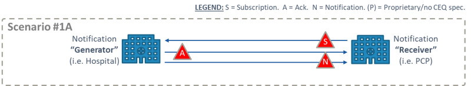

Carequality Subscription Implementation Guide for Push Notifications
0.1.0 - CI Build
Carequality Subscription Implementation Guide for Push Notifications
0.1.0 - CI Build
Carequality Subscription Implementation Guide for Push Notifications - Local Development build (v0.1.0). See the Directory of published versions
The concept of a role within the use case is central to this Implementation Guide and to defining the rights, obligations, and responsibilities of Carequality Implementers. Implementers play a declared role or roles, and Implementers must indicate to Carequality, during the application process for each use case, which role or roles the Implementer will fill, and which role or roles each of its fill. By default, any requirement specified in Sections 3 through 6 of this Guide applies to any Implementer regardless of role. Requirements that apply only to those Implementers with a particular role or roles will clearly indicate the role or roles to which they apply.
An Implementer with the declared role of a Notification Generator is any organization, vendor, or other entity that initiates a push notification in response to a triggering event within the generator’s system to a Notification Recipient. An Implementer with the declared role of a Notification Generator shall support the technical actor(s) specified in Section —– of this Guide, and comply with any other requirements throughout this Guide that are specifically described as applying to the Notification Generator role.
An Implementer with the declared role of a Receiving System is any system that manages subscriptions and receives notifications. 
An Implementer or CC with the declared role of an Subscription Service provides subscription data management, and forwards patient specific subscriptions, subscription requests, and push notifications sent to them by Implementers or CCs in the Notification Generator, Notification Receiver, and Subscription Service roles. In addition, Subscription Services provide a list of Implementers and/or CCs in the Notification Generator or Receiver role who potentially have, likely have, or are known to have a clinical relationship with the patient who is the subject of a subscription.
A Subscription Service may not impose any additional terms beyond the Carequality Elements, including fees, on Notification Recipients or Notification Generators on any organization that is using the Subscription Service endpoint only to send, pass on, or receive notifications or subscriptions, but are not otherwise contractually bound to that Subscription Service.
Carequality does not restrict any Implementer from acting in multiple roles within this Use Case.